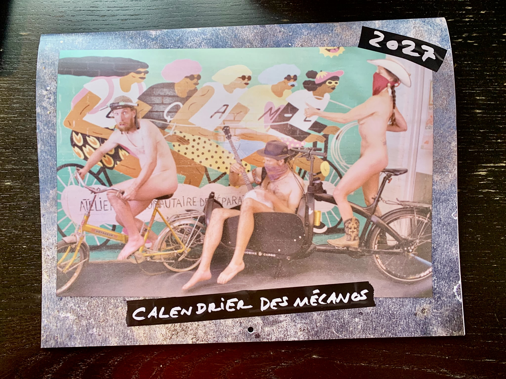

Le calendrier des mécanos est un projet de la communauté de vélo de Montréal, en particulier de la communauté des ateliers communautaires de vélo. Après n'avoir pas été publié depuis 2019, le projet a été repris sous la bannière de la coalition Bécyks Unis Montréal (BUMBUM). Le calendrier des mécanos est un calendrier nu qui cherche à représenter la diversité et la créativité de la communauté vélo. Sa vente sert à financer la coalition et le démarrage de nouveaux ateliers communautaires dans le grand Montréal. Sa réalisation a regroupé un grand nombre de bénévoles de différents ateliers. En plus de cela, une soirée de lancement destinée à tous.tes les bénévoles des ateliers a été organisée.
Projet
Calendrier des mécanos
Projet collectif de calendrier pour l'année 2027

Type
Projet
Période
2025–aujourd’hui
Rôle
Co-coordination
Lieu
Montréal
À propos
Photos

Le calendrier en 2014
